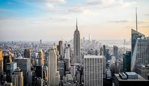

Bienvenidos a mi sitio web dedicado a la ciudad de Nueva York. Desde los rascacielos icónicos hasta los bulliciosos mercados callejeros, esta metrópolis tiene algo que te atrapa.


| Año | Población | ||
| 2020 | 8,336,817 | ||
| 2021 | 8,804,109 | ||
| 2022 | 9,200,000 | ||
| 2023 | 9,600,000 | ||
| 2024 | 10,000,000 | ||
| 2025 | 10,400,000 |
| Plato | Descripción | Origen | Opinión |
| Bagel | Panecillo redondo y agujereado con queso de crema o salmón | Inmigrantes judíos en Nueva York | Delicioso |
| Pizza al estilo neoyorquino | Masa fina, salsa de tomate y mozzarella | Nueva York | Simple y deliciosa |
| New York Cheesecake | Tarta densa y cremosa con queso crema | Nueva York | Empalagosa y demasiado dulce |
Esta ciudad de los Estados Unidos es conocida tanto como la capital del mundo como por sus grandes rascacielos, tiene más de 5.000 edificios altos casi todos en Manhattan, que es el distrito más importante. Nueva York cuenta con excelentes servicios de transporte: metro autobuses, taxis, trenes, ferrys.
El Empire State Building se alza majestuosamente sobre el horizonte. El aroma del café recién hecho flota en el aire de las cafeterías de Greenwich Village. La Brooklyn Bridge conecta Manhattan con Brooklyn.
 Nueva yorkVisita la página oficial de turismo de Nueva York: NYC Go
Explora los eventos culturales en Lincoln Center: Lincoln Center